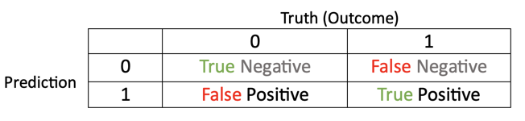
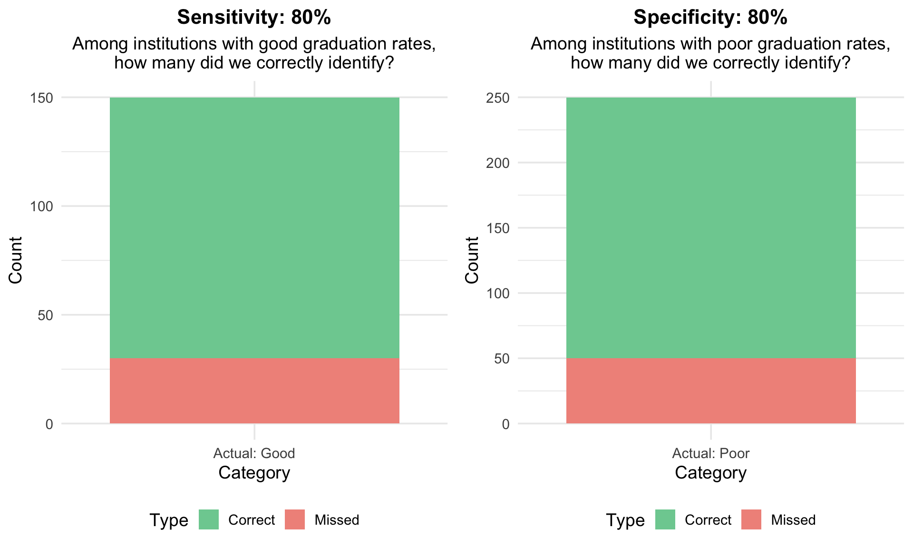
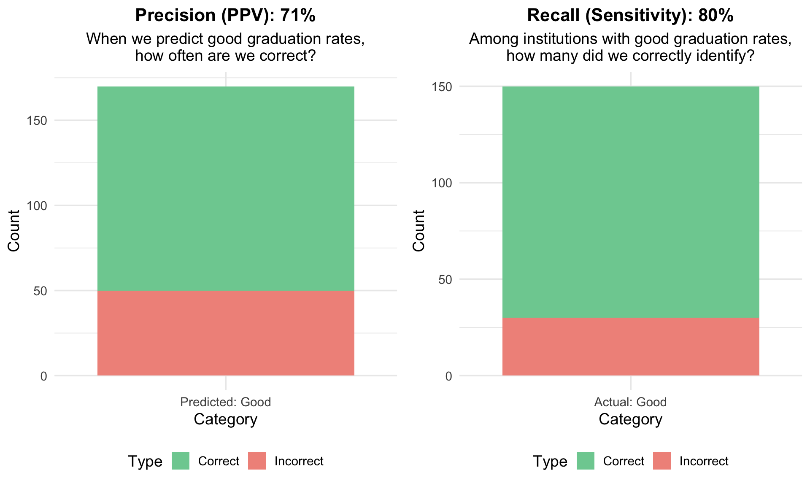
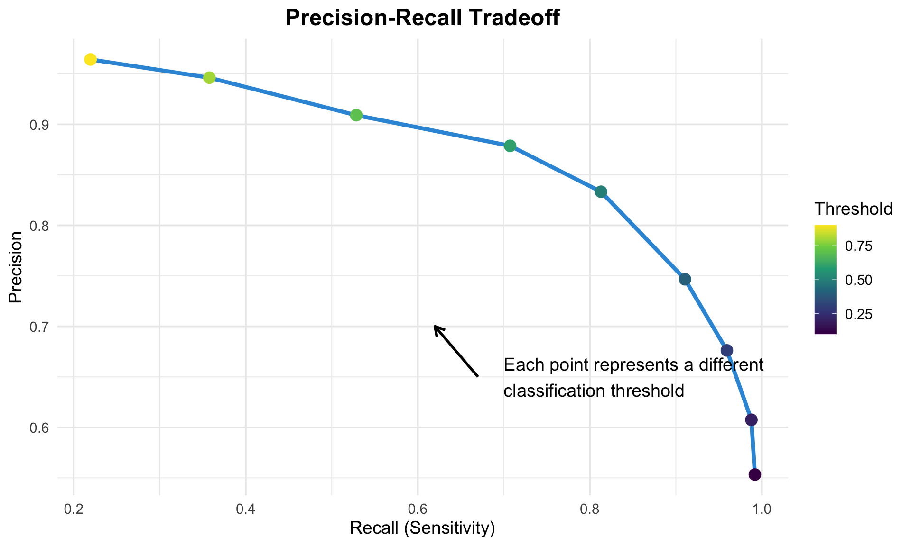
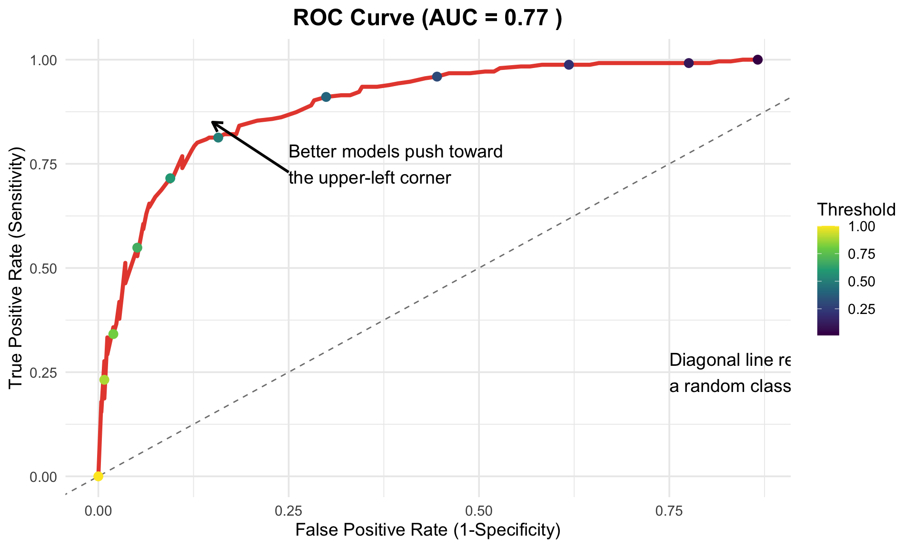

# A tibble: 3 × 15
code_module code_presentation id_student gender region highest_education
<chr> <chr> <dbl> <chr> <chr> <chr>
1 AAA 2013J 11391 M East Anglia… HE Qualification
2 AAA 2013J 28400 F Scotland HE Qualification
3 AAA 2013J 30268 F North Weste… A Level or Equiv…
# ℹ 9 more variables: imd_band <chr>, age_band <chr>,
# num_of_prev_attempts <dbl>, studied_credits <dbl>, disability <chr>,
# final_result <chr>, module_presentation_length <dbl>,
# date_registration <dbl>, date_unregistration <dbl>How Good is Our Model, Really?
Conceptual Overview
Purpose and Agenda
How do we interpret a machine learning model? What else can we say, besides how accurate a model this? This module is intended to help you to answer these questions by examining output from a classification and a regression model. We use a large data set, the Open University Learning Analytics Dataset (OULAD).
What we’ll do in this presentation
- Discussion 1
- Introducing the OULAD
- Key Concept #1: Accuracy
- Key Concept #2: Feature Engineering (part A)
- Key Concept #3: Metrics and their real-world interpretation
- Discussion 2
- Introduction to the other parts of this module
Two notes
- Sometimes, we do things that are a little bit harder in the short-term for pedagogical reasons (evaluating metrics with training data, for instance)—some of these frictions will go away when we progress to our “full” model (in the next module)
- Whereas the last module was focused on a big concept (the importance of splitting data into training and testing sets), this module is focused on a bunch of concepts (different fit metrics) that are best understood when they are used in a variety of specific instances (when each metric is needed, used, and interpreted)
Discussion 1
- We are likely familiar with accuracy and maybe another measure, Cohen’s Kappa
- But, you may have heard of other means of determining how good a model is at making predictions: confusion matrices, specificity, sensitivity, recall, AUC-ROC, and others
- Broadly, these help us to understand for which cases and types of cases a model is predictively better than others in a finer-grained way than accuracy
- Think broadly and not formally (yet): What makes a prediction model a good one?
- After having worked through the first and second modules, have your thoughts on what data you might use for a machine learning study evolved? If so, in what ways? If not, please elaborate on your initial thoughts and plans.
Introducing the OULAD
OULAD
- The Open University Learning Analytics Dataset (OULAD) is a publicly available dataset from the Open University in the UK
- It contains data on students enrolled in online courses, including their demographics, course interactions, and final grades
- Many students pass these courses, but not all do
- We have data on students’ initial characteristics and their interactions in the course
- If we could develop a good prediction model, we could provide additional supports to students–and maybe move the needle on some students succeeding who might not otherwise
OULAD files
We’ll be focusing on three files:
- studentInfo, courses, and studentRegistration
These are joined together (see oulad.R) for this module.
OULAD data
Key Concept #1
Accuracy
Let’s start with accuracy and a simple confusion matrix; what is the Accuracy?
| Outcome | Prediction | Correct? |
|---|---|---|
| 1 | 1 | Yes |
| 0 | 0 | Yes |
| 0 | 1 | No |
| 1 | 0 | No |
| 1 | 1 | Yes |
Accuracy Calculation
Use the tabyl() function (from {janitor} to calculate the accuracy in the code chunk below.
The limitation of accuracy
| Model | Accuracy | Class_Distribution |
|---|---|---|
| Model A | 0.8 | 85% Good, 15% Poor |
| Model B | 0.7 | 15% Good, 85% Poor |
Both models have 80% accuracy, but are they equally good?
Beyond accuracy: The need for nuance
- Accuracy is insufficient when:
- Class distributions are imbalanced
- Different types of errors have different consequences
- You need to tune your model for specific objectives
- Example from OULAD data:
- What if only 20% of students pass a class?
- A model that always predicts “not pass” would have 80% accuracy, but is useless for identifying successful students
- We need metrics that tell us:
- How well we identify positive cases (pass) and negative cases (fail)
- How reliable our positive and negative predictions are
Confusion Matrix
Now, let’s create a confusion matrix based on this data - this lets us dive deeper into how good our models’ predictions are:
Confusion Matrix Terms
Accuracy: Prop. of the sample that is true positive or true negative
True positive (TP): Prop. of the sample that is affected by a condition and correctly tested positive
True negative (TN): Prop. of the sample that is not affected by a condition and correctly tested negative
False positive (FP): Prop. of the sample that is not affected by a condition and incorrectly tested positive
False negative (FN): Prop. of the sample that is affected by a condition and incorrectly tested positive.
Confusion Matrix Visual
Metrics

AUC-ROC
- Area Under the Curve - Receiver Operator Characteristic (AUC-ROC)
- Informs us as to how the True Positive rate changes given a different classification threshhold
- Classification threshhold: the probability above which a model makes a positive prediction
- Higher is better
Key Concept # 2
Feature Engineering (Part A)
Why?
Let’s consider a very simple data set, d, one with time_point data, var_a, for a single student. How do we add this to our model? Focus on the time element; how could you account for this?
Why (again)?
How about a different variable, now focusing on the variable, var_b. How could we add this to a model?
d <- tibble(student_id = "janyia", time_point = 1:10, var_b = c(12, 10, 35, 3, 4, 54, 56, 75, 63, 78))
d %>% head(3)# A tibble: 3 × 3
student_id time_point var_b
<chr> <int> <dbl>
1 janyia 1 12
2 janyia 2 10
3 janyia 3 35What are some other ideas?
Other Options
A few (other) options
- Raw data points
- Their mean
- Their maximum
- Their variability (standard deviation)
- Their linear slope
- Their quadratic slope
Each of these may derive from a single variable but may offer predictive utility as distinct features
Time Stamps
Here’s a time stamp:
[1] "2025-07-13 19:47:47 EDT"How could this variable be used as a predictor variable?
How?
- We can do all of these things manually
- But, there are also helpful “{recipes}” functions to do this
- Any, the {recipes} package makes it practical to carry out feature engineering steps for not only single variables, but groups of variables (or all of the variables)
- Examples, all of which start with
step():step_dummy()step_normalize()step_inpute()step_date()step_holiday()
Key Concept #3: Metrics and their real-world interpretation
From confusion matrix to metrics
| Metric | Formula | Question | Value |
|---|---|---|---|
| Accuracy | (TP + TN) / (TP + TN + FP + FN) | Overall, how often is the model correct? | 80% |
| Sensitivity/Recall | TP / (TP + FN) | When an institution actually has good graduation rates, how often does the model predict this? | 80% |
| Specificity | TN / (TN + FP) | When an institution actually has poor graduation rates, how often does the model predict this? | 80% |
| Precision/PPV | TP / (TP + FP) | When the model predicts good graduation rates, how often is it correct? | 71% |
| NPV | TN / (TN + FN) | When the model predicts poor graduation rates, how often is it correct? | 87% |
| F1 Score | 2 * (Precision * Recall) / (Precision + Recall) | What is the harmonic mean of precision and recall? | 75% |
Sensitivity vs. Specificity
Precision vs. Recall (Sensitivity)
F1 Score: The Harmonic Mean
What is F1 Score? - F1 = 2 × (Precision × Recall) / (Precision + Recall) - Harmonic mean balances precision and recall - Ranges from 0 to 1 (higher is better) - Only high when both precision and recall are high
Why harmonic mean instead of arithmetic mean? - Harmonic mean penalizes extreme values more severely - If either precision OR recall is very low, F1 will be low - Forces you to achieve balance between the two metrics
When to Use F1 Score in OULAD Context
F1 Score is ideal when: - You need balanced performance on precision and recall - Both false positives AND false negatives are costly - You’re comparing multiple models and want a single metric - Class imbalance exists but you need to perform well on both classes
OULAD Example: - Scenario: Predicting students who need academic support - Goal: Find struggling students (high recall) while avoiding overwhelming support services (high precision) - F1 helps balance: Catching most at-risk students without flooding counselors with false alarms
Limitation: F1 score doesn’t tell you which metric is driving performance - you still need to examine precision and recall individually for full understanding
Metrics in Context: What Matters for OULAD?
When using the Open University Learning Analytics Dataset (OULAD) to build models that predict student outcomes at the module level (e.g., pass, fail, or withdrawal), the choice of which performance metrics to prioritize depends heavily on the specific goals of your analysis and the interventions or actions that will follow.
High Precision (Positive Predictive Value - PPV)
Is crucial if: * You aim to reliably identify students who are genuinely at high risk of failing or withdrawing, and interventions are costly or intensive. The focus is on minimizing false positives (wrongly labeling a student as at-risk when they are not). * You are allocating limited, high-impact support resources (e.g., one-on-one tutoring, intensive counseling) and want to ensure they reach students who truly need them. * The “cost” of a false positive is high (e.g., causing unnecessary anxiety for a student flagged as at-risk, or misdirecting scarce resources).
High Recall (Sensitivity)
Is crucial if: * Your primary goal is to identify as many students at risk of failing or withdrawing as possible, even if it means some students who would have ultimately passed are also flagged. The focus is on minimizing false negatives (failing to identify a student who will struggle). * You are implementing broad, lower-cost interventions (e.g., sending encouraging emails, pointing to general study resources, offering optional workshops) where wider reach is beneficial. * The “cost” of a false negative is high (e.g., missing the opportunity to support a student who subsequently fails or withdraws).
High Specificity
Is crucial if: * You want to accurately identify students who are not at risk and are likely to pass or achieve distinction, perhaps to study their successful learning patterns or to avoid unnecessary interventions. * You are trying to minimize the number of students incorrectly flagged for intervention who would have succeeded on their own (reducing “false alarms” for students not needing support). * Resources for “non-intervention” or “positive pathway” studies are limited, and you need to be sure you are focusing on genuinely low-risk students. :::
In Essence for OULAD:
- Prioritize Precision when targeted, resource-intensive interventions for at-risk students are planned.
- Prioritize Recall when broad, less costly interventions are available, and the main aim is to catch every potentially struggling student.
- Prioritize Specificity when the goal is to correctly identify students not needing intervention, or to study successful student cohorts with high confidence.
The precision-recall tradeoff
The ROC curve and AUC
Choosing the right classification threshold
The choice of threshold depends on your specific needs and priorities:
Default threshold (0.5): Balanced, but often not optimal
Lower threshold: Increases sensitivity, decreases specificity
- Pro: Identifies more institutions with good graduation rates
- Con: More false positives (incorrectly labeled as good)
Higher threshold: Increases specificity, decreases sensitivity
- Pro: More confident in positive predictions (high precision)
- Con: Misses more institutions with good graduation rates
Optimal threshold depends on:
- The relative costs of false positives vs. false negatives
- Available resources for intervention
- Stakeholder priorities
Discussion 2
- Which metrics for supervised machine learning models (in classification “mode”) are important to interpret? Why?
- Thinking broadly about your research interest, what would you need to consider before using a supervised machine learning model? Consider not only model metrics but also the data collection process and how the predictions may be used.
Introduction to the other parts of this module
Baker, R. S., Berning, A. W., Gowda, S. M., Zhang, S., & Hawn, A. (2020). Predicting K-12 dropout. Journal of Education for Students Placed at Risk (JESPAR), 25(1), 28-54.
Baker, R. S., Bosch, N., Hutt, S., Zambrano, A. F., & Bowers, A. J. (2024). On fixing the right problems in predictive analytics: AUC is not the problem. arXiv preprint. https://arxiv.org/pdf/2404.06989
Maestrales, S., Zhai, X., Touitou, I., Baker, Q., Schneider, B., & Krajcik, J. (2021). Using machine learning to score multi-dimensional assessments of chemistry and physics. Journal of Science Education and Technology, 30(2), 239-254.
- Adding another data source from the OULAD, assessments data
- Interpreting each of the metrics in greater detail
- Using
metric_set
- Stepping back and interpreting the model as a whole, focusing on moving beyond accuracy!
- Finding another relevant study
fin
General troubleshooting tips for R and RStudio